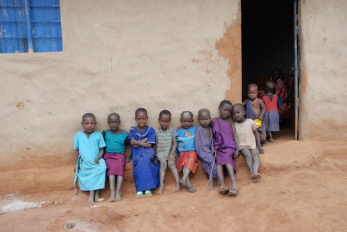

Give a little, transform lives.
In Uganda, many children miss school, patients go untreated, and families struggle daily — not because they lack dreams, but because they lack opportunity.
Selfless Hearts for the Needy – Uganda exists to bridge that gap. Our work is rooted in lived experience: one act of compassion once changed a life — today, that life is committed to changing others.
When you give, you are not just donating money. You are keeping a child in school, restoring dignity to a patient, and giving hope to a family that feels forgotten.
Every amount matters. Every heart counts.
Selfless hearts Uganda is a non-profit organization dedicated to supporting vulnerable children, families, and communities through education, healthcare, and empowerment.
Selfless Hearts Uganda was born from lived experience. I am a medical clinician who once stood where these children stand today — vulnerable, uncertain, and dependent on compassion. Because someone cared, My life changed. Today,I give back.
Together, we ca help a child go to school, a patient to receive healthcare and a family to choose hope over despair. This restores their hope and brightens their future, we give a vulnerabel soul a chance to live.
